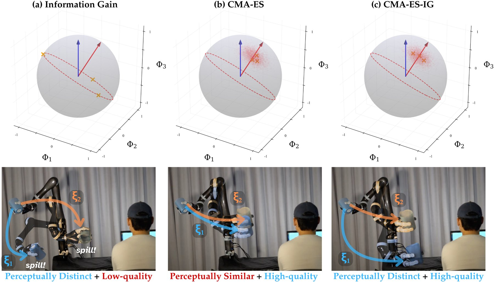
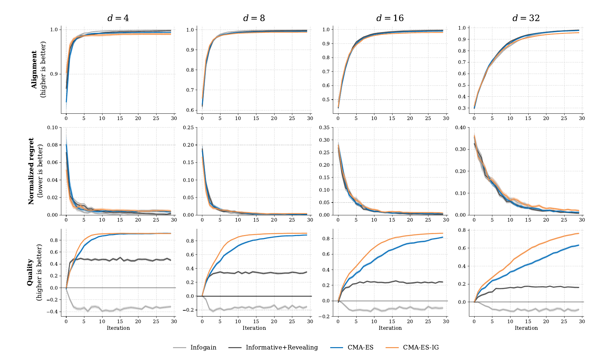
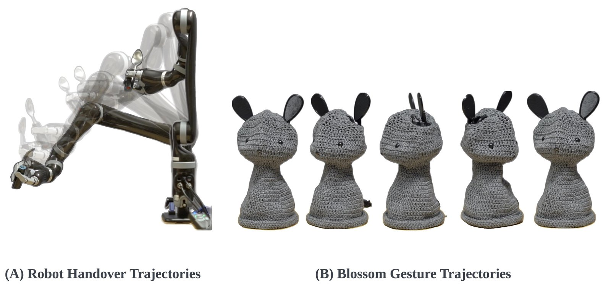
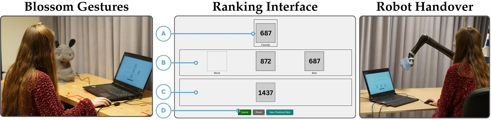

TL;DR Robots that learn from people's rankings usually pick questions only to learn as quickly as possible, so what they show users doesn't visibly improve. CMA-ES-IG samples candidates from an evolving CMA-ES search distribution and keeps a perceptually distinct, informative subset. In simulation it learns preferences as accurately as the baselines while showing better behaviours, and real users preferred it.
Try it: teach a Jaco2 how to hand you a cup
These are the same 1,000 handover trajectories our study participants ranked on the real robot. You sit across the table (the translucent figure). Each round, CMA-ES-IG shows you three. Rank them however you like. Everything runs in your browser.
Round 1
Watch all three, then click your favourite first.
You can also click a robot in the scene. Click a ranked one again to undo.
Updating…
Settings
CMA-ES-IG draws 100 samples from its search distribution, clusters them with K-means, and shows you the handovers nearest the 3 centroids. Switching algorithms starts a fresh session.
The robot model is the Kinova j2n6s300 URDF from kinova-ros. The features are an 8-D autoencoder embedding of the trajectories. The robot's guess comes from a particle belief over a linear reward, updated with the Plackett–Luce model[1, 2].
Abstract
Robots that interact with humans must adapt to individual users' preferences to operate effectively in human-centered environments. An intuitive approach to learning non-expert users' preferences is through rankings of robot behaviors, such as trajectories, gestures, or voices. However, existing preference-learning techniques primarily optimize learning outcomes, such as sample efficiency and preference estimation accuracy, without explicitly accounting for how users experience the teaching process. In particular, while optimizing for information gain efficiently learns user preferences, it does not guarantee that the behaviors presented to users improve over time. This work introduces Covariance Matrix Adaptation Evolution Strategy with Information Gain (CMA-ES-IG), an algorithm that incorporates user experience into preference learning by generating candidate robot behaviors that are informative while additionally exhibiting improvement throughout the teaching process. Compared to state-of-the-art alternatives, CMA-ES-IG (1) scales more effectively to higher-dimensional preference spaces, (2) achieves comparable preference recovery while producing higher-quality queries across diverse learned feature representations, and (3) is preferred by non-expert users eliciting robot preferences through rankings. Our results highlight the importance of considering both learning outcomes and the user experience when designing preference-learning algorithms for human-centered robotics.
Method
Each behaviour ξ is described by features Φ(ξ), which can be hand-crafted or learned (an autoencoder, PCA, or pretrained embeddings). We model the user's reward as ω⊤Φ(ξ) and their rankings with the Plackett–Luce model[1, 2]. CMA-ES-IG combines two complementary ideas. CMA-ES[3] proposes behaviours that keep improving toward what the user prefers. Information gain[4, 5] picks sets of behaviours that are perceptually distinct and robust to ranking noise. Each round takes four steps:
- 1Sample
Draw D = 100 candidates from the CMA-ES[3] search distribution N(μ, C), which concentrates on high-reward regions.
- 2Diversify
Cluster them with K-means and show the K centroids. They are spread out, so easy to tell apart (the geometric goal of information gain), yet still representative of the distribution.
- 3Rank
The user orders the K behaviours. The belief over ω is updated with Bayes' rule.
- 4Adapt
The ranking drives the CMA-ES update of μ and C, moving the search toward what the user likes.
Metrics
In simulation we know each user's true preference ω*, and so their true reward R*(ξ) = ω*⊤Φ(ξ). After every ranking we measure two things: how accurately the robot has learned the preference (alignment and regret), and how good the behaviours it shows the user are (quality, a metric we propose).
Alignment higher is better
The expected cosine similarity[5] between a preference ω drawn from the robot's belief and the true preference ω*, ranging from −1 to 1. It captures whether the robot's estimate of what the user wants points in the right direction.
Normalized regret lower is better
The difference in true reward between the user's best behaviour ξ* and the behaviour ξ′ the robot estimates is best, divided by the range of true rewards, ranging from 0 to 1. It captures how much worse acting on the robot's current best guess would be than giving the user their favourite.
Quality higher is better
The mean true reward of the behaviours in the query Q that the user is asked to rank. It captures whether the options the user is asked to choose between get better over time.
Each metric is tracked over the sequence of rankings and summarized as the area under its curve (AUC), normalized by the number of rankings.
Results
Simulation: scaling with feature dimension
In parameter-estimation tasks with d ∈ {4, 8, 16, 32}, CMA-ES-IG was non-inferior to every baseline in alignment and regret (margin 0.05). It produced significantly higher-quality queries than Infogain[4, 5], Informative+Revealing[6], and CMA-ES[3] at every dimension, and its lead over CMA-ES grew with dimension.

CMA-ES-IG generates a query in under 1 ms, even in 32 dimensions. That is about 10,800× faster than optimising information gain directly (0.91 ms vs. 9.9 s).
| Algorithm | d = 4 | d = 8 | d = 16 | d = 32 |
|---|---|---|---|---|
| Infogain[4, 5] | 172 ms | 620 ms | 4407 ms | 9900 ms |
| Informative+ | 42.7 ms | 47.6 ms | 56.1 ms | 74.5 ms |
| CMA-ES[3] | 0.02 ms | 0.02 ms | 0.02 ms | 0.03 ms |
| CMA-ES-IG | 0.72 ms | 0.73 ms | 0.79 ms | 0.91 ms |
Simulation: across learned feature spaces
The same pattern holds in four robot tasks that each use a different kind of feature space: random neural features (Lunar Lander[7]), a VAE latent space (Driving[8]), hand-crafted features (Robot Face Design[9]), and pretrained embeddings + PCA (Robot Voice Design[10]).

(a) Lunar Lander. Users differ in the path they want the spaceship to take as it lands between the flags.
(b) Driving. Users differ in how they want the car to drive down the highway and merge around the other car.
(c) Robot Face Design. Users differ in how they want a screen-based robot face to look, such as its eye spacing, mouth size, and colour.
(d) Robot Voice Design. Users differ in how they want a robot's voice to sound, such as its pitch, accent, and timbre.

User study: real people, real robots
14 participants taught a Kinova Jaco2 how to hand over a marker, cup, or spoon, and a Blossom robot[11, 12] how to gesture happiness, sadness, or anger. Each used Infogain, CMA-ES, and CMA-ES-IG (algorithm names hidden).



BibTeX
@misc{dennler2026cmaesig,
title = {Improving through Interaction: Searching Behavioral Representation Spaces with {CMA-ES-IG}},
author = {Dennler, Nathaniel and Shi, Zhonghao and Tao, Yiran and Bobu, Andreea and Nikolaidis, Stefanos and Matari{\'c}, Maja},
year = {2026},
eprint = {2603.09011},
archivePrefix = {arXiv},
primaryClass = {cs.RO},
url = {https://arxiv.org/abs/2603.09011}
}
References
- R. L. Plackett. The analysis of permutations. Journal of the Royal Statistical Society, Series C, 24(2):193–202, 1975.
- V. Myers, E. Bıyık, N. Anari, and D. Sadigh. Learning multimodal rewards from rankings. Conference on Robot Learning (CoRL), 2022.
- N. Hansen, S. D. Müller, and P. Koumoutsakos. Reducing the time complexity of the derandomized evolution strategy with covariance matrix adaptation (CMA-ES). Evolutionary Computation, 11(1):1–18, 2003.
- E. Bıyık, M. Palan, N. C. Landolfi, D. P. Losey, and D. Sadigh. Asking easy questions: A user-friendly approach to active reward learning. arXiv:1910.04365, 2019.
- D. Sadigh, A. D. Dragan, S. Sastry, and S. A. Seshia. Active preference-based learning of reward functions. Robotics: Science and Systems (RSS), 2017.
- S. Habibian, A. Jonnavittula, and D. P. Losey. Here’s what I’ve learned: Asking questions that reveal reward learning. ACM Transactions on Human-Robot Interaction, 11(4), 2022.
- M. Towers et al. Gymnasium: A standard interface for reinforcement learning environments. arXiv:2407.17032, 2024.
- D. Sadigh, S. Sastry, S. A. Seshia, and A. D. Dragan. Planning for autonomous cars that leverage effects on human actions. Robotics: Science and Systems (RSS), 2016.
- N. Dennler, E. Torrence, U. Yoo, S. Nikolaidis, and M. Matarić. PyLips: An open-source Python package to expand participation in embodied interaction. UIST Adjunct, 2024.
- E. Casanova et al. XTTS: A massively multilingual zero-shot text-to-speech model. arXiv:2406.04904, 2024.
- M. Suguitan and G. Hoffman. Blossom: A handcrafted open-source robot. ACM Transactions on Human-Robot Interaction, 8(1):1–27, 2019.
- Z. Shi, A. O’Connell, Z. Li, S. Liu, J. Ayissi, G. Hoffman, M. Soleymani, and M. J. Matarić. Build your own robot friend: An open-source learning module for accessible and engaging AI education. AAAI Conference on Artificial Intelligence, 2024.